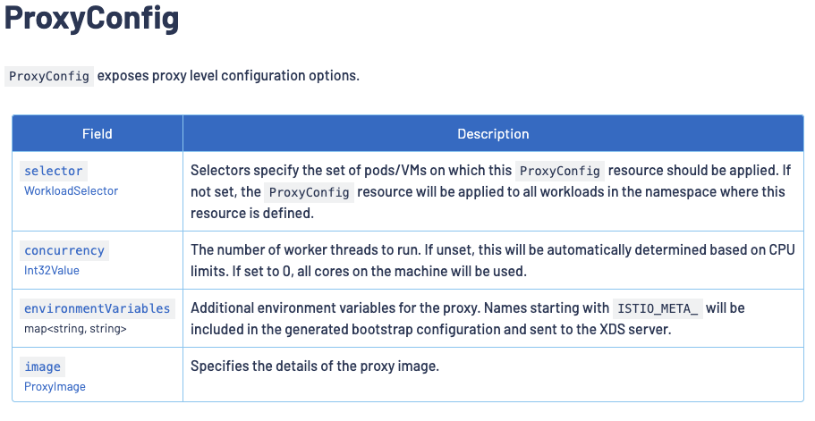
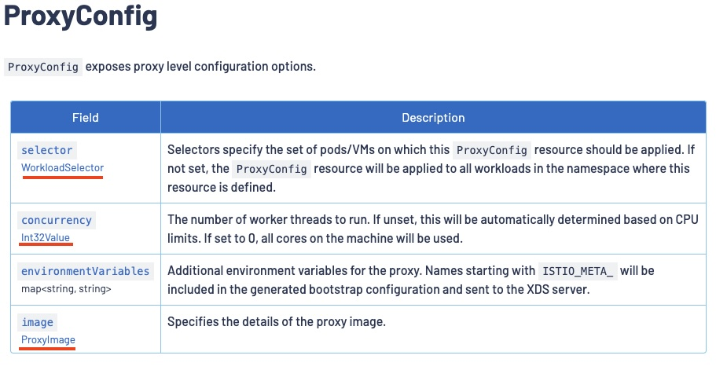
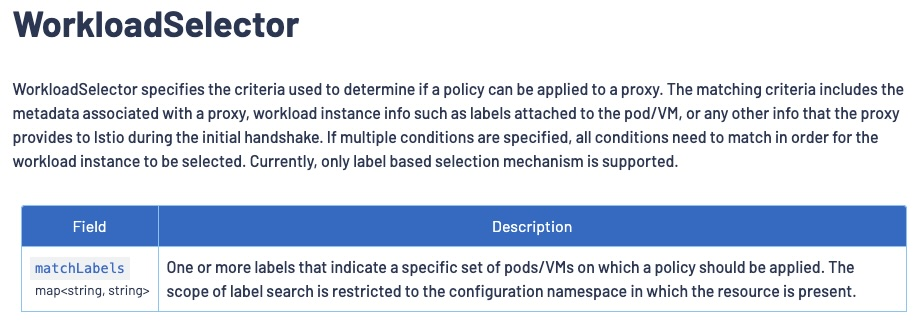
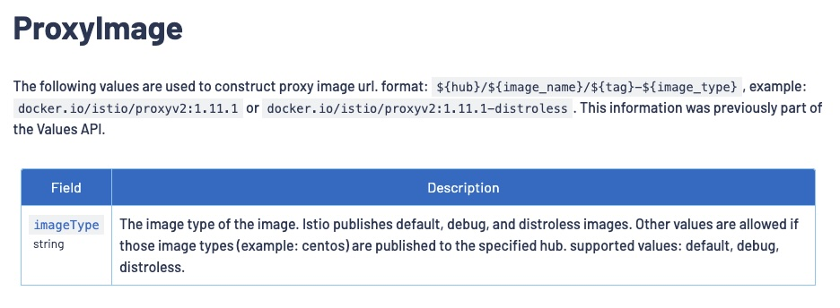
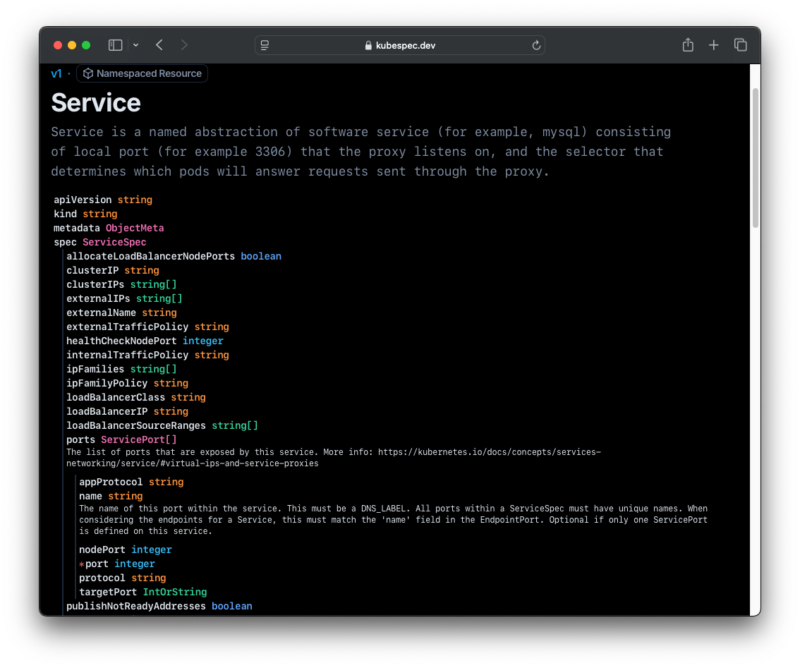

WTF is up with these tables in the Istio docs?
Or to put it another way: how am I supposed to know what fields and values should go where when I am crafting Istio custom resources?
RTFM
The configuration reference docs contain an exhaustive guide to every CRD, metric, analysis message, and Kubernetes annotation used by Istio. Many of these reference docs include a field-by-field breakdown of deeply nested data structures. The problem with trying to document a deeply nested data structure is that it doesn't lend itself to fitting in an average web page. So rather than trying to show the deeply nested relationship in a single structure, they document the top-level fields and then provide links from there down to each subsection.
Let's look at the reference for a ProxyConfig resource.

The leftmost column of field names indicates which values will be accepted under the spec section of a ProxyConfig resource.
apiVersion: networking.istio.io/v1beta1
kind: ProxyConfig
metadata:
name: a-very-cool-config
spec:
selector:
concurrency:
environmentVariables:
image:ProxyConfig docs table.That leftmost column also includes the types of each of the acceptable field names, but those type names will never be accepted as field names.
apiVersion: networking.istio.io/v1beta1
kind: ProxyConfig
metadata:
name: this-would-NEVER-work
spec:
WorkloadSelector:
Int32Value:
map<string, string>:
ProxyImage:The types indicate what is allowed to be assigned to the corresponding field.
apiVersion: networking.istio.io/v1beta1
kind: ProxyConfig
metadata:
name: a-very-cool-config
spec:
selector: An object of type WorkloadSelector can go here.
concurrency: A 32 bit integer can go here.
environmentVariables: A map (associative array) of string->string can go here.
image: An object of type ProxyImage can go here.For simple values like an integer or an associative array we don't need to look farther to use these docs to craft a spec compliant resource.
apiVersion: networking.istio.io/v1beta1
kind: ProxyConfig
metadata:
name: a-very-cool-config
spec:
concurrency: 2
environmentVariables:
EDITOR: vim
DEBUG: "1"For complex types like a WorkloadSelector object or a ProxyImage object we need to examine the corresponding tables to work out the correct field names and value types to use.


WorkloadSelector.
ProxyImage.These two subsequent reference tables now provide enough information to craft the next sections of our ProxyConfig object, adding the values for selector and image as described in each of those tables.
apiVersion: networking.istio.io/v1beta1
kind: ProxyConfig
metadata:
name: a-very-cool-config
spec:
concurrency: 2
environmentVariables:
EDITOR: vim
DEBUG: "1"
selector:
app.kubernetes.io/name: httpbin
image:
imageType: distrolessSee Also
Kubernetes
Istio isn't the only project trying to manage this problem, the K8s API reference suffers from it too. Take a look at the API reference for a Service for instance. It starts off by documenting the top level fields supported by a Service resource, but it doesn't try to recursively itemize every single option you could include under the spec. Instead it refers you to the section for the ServiceSpec type which lists all the available fields it supports, and goes on to refer you to the relevant subsection for any of its own nested object types (eg. Service.spec.ports is a ServicePort object.
You can see this play out in the output of kubectl explain as well. It will either show you a detailed explanation of the avialeble fields:
$ kubectl explain service
KIND: Service
VERSION: v1
DESCRIPTION:
Service is a named abstraction of software service (for example, mysql)
consisting of local port (for example 3306) that the proxy listens on, and
the selector that determines which pods will answer requests sent through
the proxy.
FIELDS:
apiVersion <string>
APIVersion defines the versioned schema of this representation of an object.
Servers should convert recognized schemas to the latest internal value, and
may reject unrecognized values. More info:
https://git.k8s.io/community/contributors/devel/sig-architecture/api-conventions.md#resources
kind <string>
Kind is a string value representing the REST resource this object
represents. Servers may infer this from the endpoint the client submits
requests to. Cannot be updated. In CamelCase. More info:
https://git.k8s.io/community/contributors/devel/sig-architecture/api-conventions.md#types-kinds
metadata <ObjectMeta>
Standard object's metadata. More info:
https://git.k8s.io/community/contributors/devel/sig-architecture/api-conventions.md#metadata
spec <ServiceSpec>
Spec defines the behavior of a service.
https://git.k8s.io/community/contributors/devel/sig-architecture/api-conventions.md#spec-and-status
status <ServiceStatus>
Most recently observed status of the service. Populated by the system.
Read-only. More info:
https://git.k8s.io/community/contributors/devel/sig-architecture/api-conventions.md#spec-and-statusOr it will recursively give you a type-by-type breakdown of every single field supported at every depth level:
$ kubectl explain service --recursive
KIND: Service
VERSION: v1
DESCRIPTION:
Service is a named abstraction of software service (for example, mysql)
consisting of local port (for example 3306) that the proxy listens on, and
the selector that determines which pods will answer requests sent through
the proxy.
FIELDS:
apiVersion <string>
kind <string>
metadata <ObjectMeta>
annotations <map[string]string>
creationTimestamp <string>
deletionGracePeriodSeconds <integer>
deletionTimestamp <string>
finalizers <[]string>
generateName <string>
generation <integer>
labels <map[string]string>
managedFields <[]ManagedFieldsEntry>
apiVersion <string>
fieldsType <string>
fieldsV1 <FieldsV1>
manager <string>
operation <string>
subresource <string>
time <string>
name <string>
namespace <string>
ownerReferences <[]OwnerReference>
apiVersion <string> -required-
blockOwnerDeletion <boolean>
controller <boolean>
kind <string> -required-
name <string> -required-
uid <string> -required-
resourceVersion <string>
selfLink <string>
uid <string>
spec <ServiceSpec>
allocateLoadBalancerNodePorts <boolean>
clusterIP <string>
clusterIPs <[]string>
externalIPs <[]string>
externalName <string>
externalTrafficPolicy <string>
healthCheckNodePort <integer>
internalTrafficPolicy <string>
ipFamilies <[]string>
ipFamilyPolicy <string>
loadBalancerClass <string>
loadBalancerIP <string>
loadBalancerSourceRanges <[]string>
ports <[]ServicePort>
appProtocol <string>
name <string>
nodePort <integer>
port <integer> -required-
protocol <string>
targetPort <IntOrString>
publishNotReadyAddresses <boolean>
selector <map[string]string>
sessionAffinity <string>
sessionAffinityConfig <SessionAffinityConfig>
clientIP <ClientIPConfig>
timeoutSeconds <integer>
type <string>
status <ServiceStatus>
conditions <[]Condition>
lastTransitionTime <string> -required-
message <string> -required-
observedGeneration <integer>
reason <string> -required-
status <string> -required-
type <string> -required-
loadBalancer <LoadBalancerStatus>
ingress <[]LoadBalancerIngress>
hostname <string>
ip <string>
ports <[]PortStatus>
error <string>
port <integer> -required-
protocol <string> -required-But it won't do both.
Kubespec
Kubespec.dev is a kickass project that attempts to reconcile both worlds by combining both structure and some reference docs in a single place.
